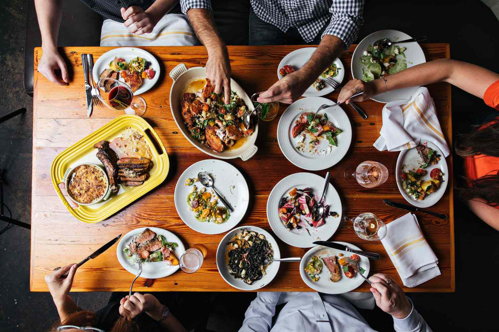

About Us
How our ingredients are grown
Our Theme Song
It's always a good time for organic food
(or pasta or burgers).
Come to Wilson's Kitchen and look forward to the following
| Farm-to-Table |
Sustainable Sourcing |
Seasonal Specials |
| Eco-Friendly |
Locally Sourced |
Health Conscious |
| Fresh Ingredients |
Vegan Options |
Gluten-Free |
| Artisanal Bread |
Organic Wines |
Ethical Sourcing |
Our operating hours
Mon-Sun 11:30am-21:00pm